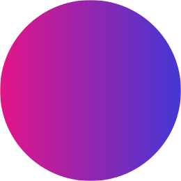

Knopf
Open source button system leveraging CSS variables, designed for rapid prototyping and production-ready applications.
Installation
CDN
<link rel="stylesheet" href="https://unpkg.com/knopf.min.css">npm
npm install knopf.cssyarn
yarn add knopf.cssUsage
import 'knopf.css'